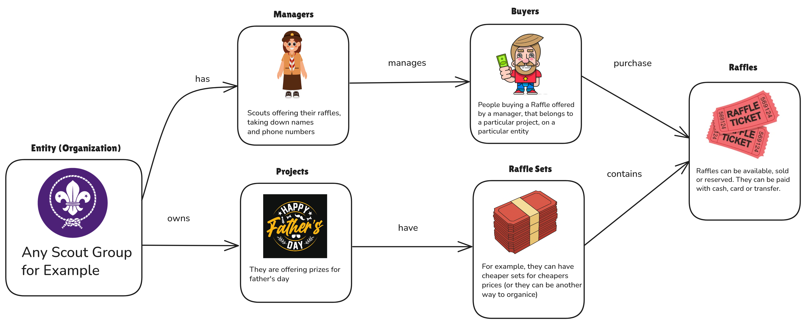
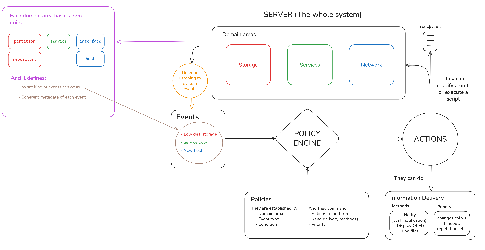
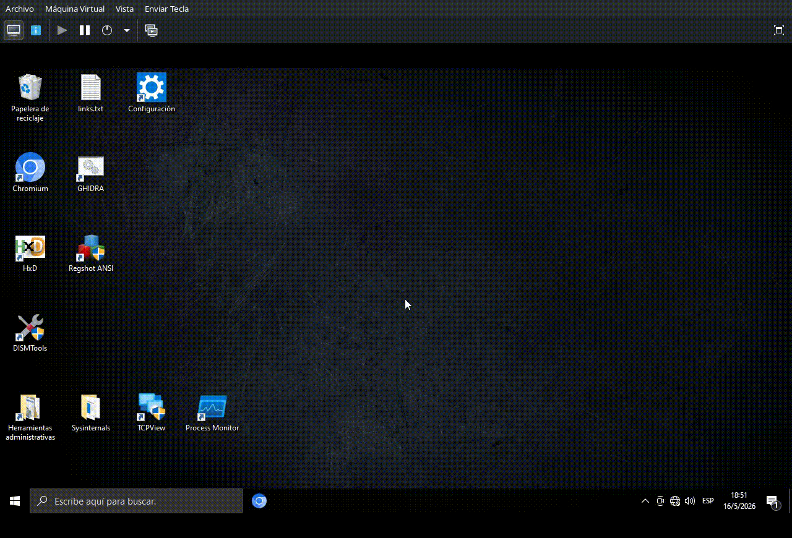
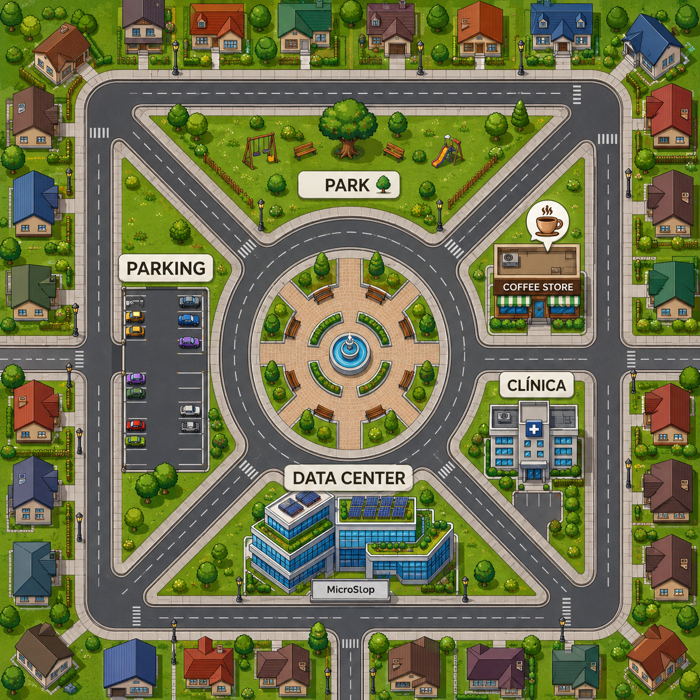

Raffles Manager API

Python · FastAPI · SQLAlchemy · MariaDB · JWT · Pydantic · bcrypt

Python · FastAPI · SQLAlchemy · MariaDB · JWT · Pydantic · bcrypt

Python · Linux · systemd · Storage monitoring · SMART

C · Arduino Pro Micro · ATmega32U4 · Firmware · HID · Keyboard layouts

Java